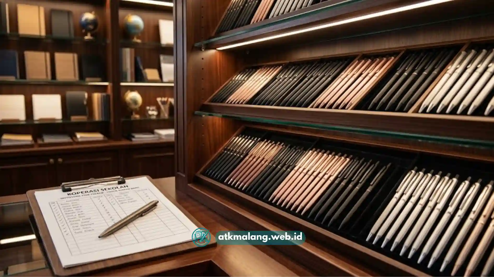

Memilih grosir pulpen Malang yang tepat untuk koperasi sekolah berarti mengevaluasi kualitas tinta, harga per lusin, kemudahan retur barang cacat, dan kedekatan lokasi gudang agar pengiriman stok tetap lancar sepanjang tahun ajaran.
Koperasi sekolah di Malang umumnya menghadapi tantangan yang sama setiap awal tahun ajaran, yaitu lonjakan permintaan alat tulis dalam waktu singkat. Pulpen menjadi salah satu barang paling laris karena dibutuhkan hampir semua siswa dan sering habis terpakai.
Karena volume kebutuhannya besar, koperasi sekolah lebih diuntungkan bila membeli langsung dari grosir pulpen Malang dibanding dari toko eceran, sebab selisih harga per unit bisa cukup signifikan ketika dikalikan ratusan pcs.
Namun, memilih grosir yang tepat tidak cukup hanya dengan membandingkan harga di permukaan. Diperlukan semacam SOP atau prosedur baku agar pengurus koperasi punya panduan konsisten setiap kali harus mencari pemasok baru atau mengevaluasi pemasok lama.
Daftar Isi
- Apa Itu SOP Pemilihan Grosir Pulpen untuk Koperasi Sekolah?
- Mengapa Koperasi Sekolah Perlu Grosir Pulpen Khusus, Bukan Toko Eceran Biasa?
- Bagaimana Langkah-Langkah SOP Memilih Grosir Pulpen Malang?
- Apa Saja Kriteria Kualitas Pulpen yang Cocok untuk Koperasi Sekolah?
- Bagaimana Cara Menghitung Kebutuhan Stok Pulpen untuk Satu Tahun Ajaran?
- Apa Kesalahan Umum Koperasi Sekolah saat Memilih Grosir Pulpen?
- Bagaimana Cara Menjaga Hubungan Baik dengan Grosir Pulpen di Malang?
Apa Itu SOP Pemilihan Grosir Pulpen untuk Koperasi Sekolah?
SOP pemilihan grosir pulpen adalah serangkaian langkah terstruktur yang digunakan koperasi sekolah untuk menilai, membandingkan, dan menentukan pemasok pulpen secara objektif, bukan berdasarkan kebiasaan atau rekomendasi sepihak.
SOP ini penting karena keputusan pembelian Alat Tulis Kantor di sekolah biasanya melibatkan uang kas bersama, sehingga harus bisa dipertanggungjawabkan kepada kepala sekolah, komite, atau wali murid.
Tanpa SOP, pengurus koperasi rawan membeli dari pemasok yang harganya tidak kompetitif atau kualitas barangnya tidak konsisten dari waktu ke waktu.
Secara umum, SOP ini digunakan oleh bendahara koperasi, guru penanggung jawab unit usaha sekolah, atau petugas administrasi yang ditunjuk mengurus pengadaan Alat Tulis Kantor.
SOP diterapkan setiap kali koperasi akan melakukan pembelian rutin bulanan maupun pembelian besar menjelang tahun ajaran baru.

Pengecekan stok pulpen oleh pengurus koperasi sekolah.Mengapa Koperasi Sekolah Perlu Grosir Pulpen Khusus, Bukan Toko Eceran Biasa?
Koperasi sekolah perlu grosir pulpen khusus karena volume pembelian yang besar membuat selisih harga per unit dari eceran ke grosir menjadi cukup terasa dalam total pengeluaran bulanan koperasi.
Toko eceran biasanya menjual pulpen dalam satuan pcs atau lusin kecil dengan margin yang lebih tinggi, karena mereka juga menanggung biaya sewa toko dan operasional harian yang lebih besar per transaksi.
Sebaliknya, grosir pulpen Malang umumnya menjual dalam satuan kardus, gross, atau puluhan lusin sekaligus, sehingga harga per pcs bisa lebih rendah.
Selain faktor harga, grosir juga cenderung lebih fleksibel soal negosiasi termin pembayaran, terutama untuk pelanggan langganan seperti koperasi sekolah yang melakukan repeat order secara berkala.
Hubungan jangka panjang ini juga memudahkan koperasi ketika suatu waktu membutuhkan tambahan stok mendadak, misalnya saat ada acara ujian atau lomba menulis di sekolah.
Bagaimana Langkah-Langkah SOP Memilih Grosir Pulpen Malang?
Langkah SOP memilih grosir pulpen Malang mencakup lima tahap utama, yaitu survei lokasi, uji kualitas sampel, verifikasi legalitas usaha, simulasi perhitungan harga, dan uji coba order dalam skala kecil sebelum kerja sama jangka panjang.
Langkah 1, Survei dan Bandingkan Beberapa Grosir di Wilayah Malang
Sebelum menentukan pilihan, pengurus koperasi sebaiknya mendata minimal tiga hingga lima grosir pulpen yang berlokasi di Malang atau sekitarnya.
Survei ini bisa dilakukan dengan mengunjungi langsung gudang atau toko grosir, maupun menghubungi lewat telepon atau pesan singkat untuk menanyakan daftar harga awal.
Pada tahap ini, catat informasi dasar seperti jenis pulpen yang tersedia, satuan penjualan minimal, dan area layanan pengiriman. Informasi ini menjadi bahan pembanding awal sebelum masuk ke tahap uji kualitas.
Langkah 2, Minta Sampel dan Uji Kualitas Fisik Pulpen
Sampel pulpen perlu diuji langsung dengan cara menulis pada kertas HVS biasa untuk melihat kelancaran tinta, ketebalan garis, dan daya tahan ujung pena.
Pulpen yang macet-macet atau tintanya cepat menggumpal sebaiknya dihindari meskipun harganya lebih murah, karena berisiko menimbulkan keluhan dari siswa dan orang tua.
Selain kelancaran tulis, perhatikan juga kekuatan badan pulpen atau casing plastiknya. Pulpen dengan casing tipis dan mudah retak akan meningkatkan angka retur, yang pada akhirnya membebani operasional koperasi.
Langkah 3, Verifikasi Legalitas dan Reputasi Usaha Grosir
Grosir yang terpercaya biasanya memiliki identitas usaha yang jelas, seperti nama toko resmi, alamat gudang tetap, dan nomor kontak yang dapat dihubungi kembali.
Koperasi sekolah sebaiknya menghindari transaksi dengan pemasok yang hanya mengandalkan komunikasi lewat media sosial tanpa alamat fisik yang jelas.
Reputasi juga dapat ditelusuri lewat rekomendasi dari sekolah lain di Malang yang sudah lebih dulu bekerja sama dengan grosir tersebut, sehingga pengurus koperasi memiliki gambaran nyata soal ketepatan waktu pengiriman dan kualitas layanan purna jual.
Langkah 4, Hitung dan Bandingkan Simulasi Harga Grosir
Setelah mendapatkan daftar harga dari beberapa grosir, buat simulasi perhitungan berdasarkan estimasi kebutuhan pulpen selama satu semester atau satu tahun ajaran.
Simulasi ini membantu melihat gambaran biaya secara menyeluruh, bukan hanya harga per unit yang tampak murah di awal.
Perlu diperhatikan pula apakah harga yang ditawarkan sudah termasuk biaya pengiriman atau belum, karena biaya kirim yang tidak dihitung sejak awal bisa membuat estimasi anggaran koperasi meleset.
Langkah 5, Lakukan Order Percobaan Sebelum Kerja Sama Jangka Panjang
Sebelum menjadikan satu grosir sebagai pemasok tetap, sebaiknya koperasi melakukan order dalam jumlah kecil terlebih dahulu sebagai uji coba.
Order percobaan ini digunakan untuk menilai konsistensi kualitas barang, ketepatan waktu pengiriman, serta respons grosir terhadap komplain jika ada barang yang rusak.
Jika hasil uji coba memuaskan, koperasi dapat melanjutkan ke tahap negosiasi harga khusus untuk pembelian rutin dalam jumlah lebih besar.
Apa Saja Kriteria Kualitas Pulpen yang Cocok untuk Koperasi Sekolah?
Kriteria pulpen yang cocok untuk koperasi sekolah meliputi tinta yang tidak mudah macet, ujung pena yang halus di kertas, casing yang cukup kuat untuk pemakaian anak-anak, serta harga yang tetap terjangkau bagi siswa.
Selain aspek teknis menulis, koperasi juga perlu mempertimbangkan variasi warna dasar seperti hitam dan biru, karena kedua warna ini paling sering diminta guru untuk keperluan ujian dan tugas tertulis.
Ketersediaan pulpen isi ulang atau refill juga bisa menjadi nilai tambah, karena membantu siswa berhemat dibanding harus membeli pulpen baru setiap kali tintanya habis.
Bagaimana Cara Menghitung Kebutuhan Stok Pulpen untuk Satu Tahun Ajaran?
Cara menghitung kebutuhan stok pulpen adalah dengan mengalikan estimasi jumlah siswa dengan rata-rata pemakaian pulpen per siswa per semester, kemudian menambahkan cadangan sekitar 10 hingga 15 persen untuk mengantisipasi permintaan mendadak.
Sebagai gambaran umum, satu siswa jenjang sekolah menengah biasanya membutuhkan beberapa batang pulpen dalam satu semester, tergantung intensitas tugas tertulis dan kebiasaan masing-masing anak.
Data pemakaian ini sebaiknya dicatat koperasi dari histori penjualan semester sebelumnya, sehingga perhitungan kebutuhan untuk semester berikutnya menjadi lebih akurat dan tidak menebak-nebak.
Pencatatan histori penjualan ini juga membantu koperasi menghindari dua risiko sekaligus, yaitu kehabisan stok saat permintaan tinggi dan kelebihan stok yang justru membebani modal kerja koperasi dalam jangka panjang.
Apa Kesalahan Umum Koperasi Sekolah saat Memilih Grosir Pulpen?
Kesalahan umum yang sering terjadi adalah hanya berpatokan pada harga termurah tanpa mengecek kualitas, tidak memiliki pemasok cadangan, dan tidak mencatat histori transaksi secara rapi sehingga sulit melakukan evaluasi di kemudian hari.
Ketergantungan pada satu grosir tunggal juga berisiko, terutama jika sewaktu-waktu grosir tersebut kehabisan stok atau mengalami kendala operasional.
Sebaiknya koperasi memiliki minimal satu grosir cadangan sebagai antisipasi, meskipun grosir utama tetap menjadi mitra prioritas karena harga dan kualitasnya sudah teruji.
Kesalahan lain adalah tidak melakukan negosiasi ulang harga secara berkala. Harga bahan baku plastik dan tinta dapat berubah dari waktu ke waktu, sehingga harga yang disepakati satu tahun lalu belum tentu masih kompetitif dibanding penawaran grosir lain saat ini.
Bagaimana Cara Menjaga Hubungan Baik dengan Grosir Pulpen di Malang?
Hubungan baik dengan grosir dapat dijaga dengan melakukan pembayaran tepat waktu, memberikan informasi kebutuhan lebih awal sebelum musim ramai, serta memberikan umpan balik yang jelas dan sopan apabila ada barang yang tidak sesuai standar.
Komunikasi dua arah yang konsisten membuat grosir lebih memprioritaskan koperasi sekolah dibanding pelanggan baru saat terjadi keterbatasan stok, misalnya menjelang tahun ajaran baru ketika permintaan Alat Tulis Kantor melonjak serentak dari banyak sekolah di Malang.
Memilih grosir pulpen Malang untuk koperasi sekolah sebaiknya tidak dilakukan secara instan berdasarkan harga termurah semata.
Terapkan SOP bertahap mulai dari survei, uji sampel, verifikasi legalitas, simulasi harga, hingga order percobaan agar keputusan kerja sama lebih terukur dan minim risiko.
Untuk kebutuhan alat tulis lain di koperasi sekolah, pengurus juga dapat mempelajari cara memilih spidol whiteboard yang hemat tinta dan mudah dihapus, serta membandingkan daftar harga spidol boardmarker grosir Malang agar seluruh kebutuhan ATK sekolah dapat dipenuhi dari sumber yang terpercaya dan efisien dari sisi anggaran.